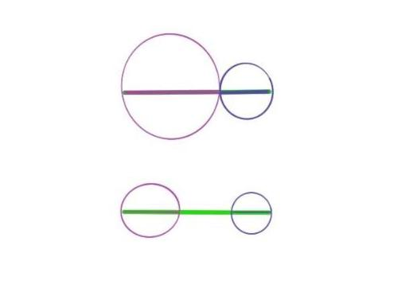

Chapter 13 第十二课（命题二十二到二十四）
九月开学之后，只能周末上课，那么每节课开始要花一点时间快速的回顾一下上一个命题。回顾命题二十一的重点也就是怎么添加辅助线，以及明确所用的定理。
命题二十二和命题二十算是一对证充要的组合，之前我们说的是任意三角形的任意两边之和都大于第三边，而接下来的命题二十二则是说任意三条线段，若其中两边之和大于第三边，则一定能构建一个三角形。也因此，命题二十是一道证明，而命题二十二是构建。
13.1 命题二十二
由分别等于三条已知线段的线段构建一个三角形：那么必须满足任取其中两条线段，其和大于第三边。
这道题首先是将给定的三条线段画到同一条直线上，然后取中间的边为底边，同时借助圆的半径相等的性质，将线段挪移到两圆相交的位置。这道证明题的关键也就是两圆相交所构建的新三角形的顶点。想象一下如果两圆不相交是什么样子？什么样的情况下两圆无法相交出顶点呢？无相交顶点也就是等价于无法构建一个封口的三角形。也就是两边之和小于第三边的情况。其实并不难理解，因为如果两边之和等于第三边，那么我们看到的是加粗的线段，互相重合；而如果两边之和小于第三边，就是开口的线条画，而无法围成图形了。如图所示：

那么圆在这个构建的过程中起到了什么样的作用呢？它既是一个媒介，来传递等价的线段，同时又是一个检测手段，两圆的关系，相交，相切，还是不相交也不相切，它等价于三边的关系也决定了三角形的构建。
13.2 命题二十三
从给定的直线上一点，构建一个直线角，使等于给定的直线角。
命题二十三并不难，这里最值得讨论的是角和三角形的关系。首先先让Alex来发散思维，说一下他所能想到的角和三角形关系的论述。Alex说的第一条是三角形内角和一百八十度，第二条是外角比其它两个内角要大。这开头两条都是三角形的性质，而我们希望触及的问题是角是什么？它能独立于三角形存在么？而思考这样的问题是因为，在证明中，欧几里得选择用构建三角形再证其中某角相等的方式。为什么要这样做呢？
这里角的定义参考定义八和定义九：
定义八：平面角是，在同一个平面内，其中一条线与另一条线相交但不重合的倾斜度。
定义九：当包含角的线是直的时候，这个角被称为直线角。
很明显，在最开始定义角的时候，是不需要将其放在某在直线围成的图形中的，比如三角形。那么三角形在这里的作用是什么呢？
三角形这里相当于一个媒介，以允许我们应用之前学过的三角形的性质来对其中含有的角进行比较。如果我们直接将角进行比较的话，也可以用位移和重合来进行论述，但显然欧几里得是试图避免这样的证明的。如果不直接对比，还可以将角进行切分等方式，部分部分的进行比较。而这里选择三角形，则是一种填充的方式，将小的部分放入大的整体中，以方便鉴别。这几种可能性代表了不同的思考方式：
- 直接比较法： 即将所需要比较的对象进行直观的整体性比较
- 细节对比法：将所需要比较的对象的细节按照需要进行划分，并一一对比
- 填充对比法：将所需要比较的对象放到更大的文本/环境中，通过与整体或其它部分的相配合进行选择。
对应到现实生活中，在学校系统里就是直观的总分比较；单科成绩比较；看排名；如果是应聘的话，就是整体印象；简历细节；团队合作表现。